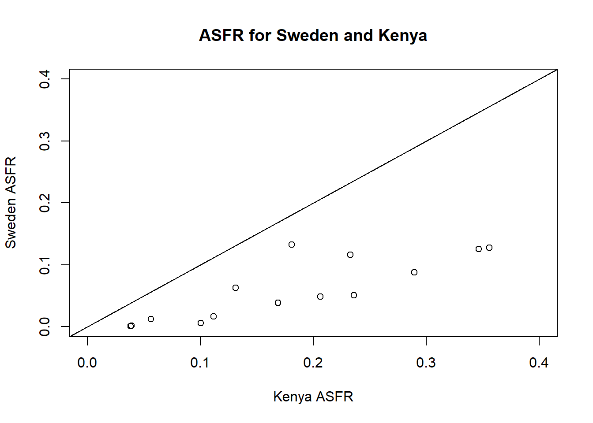
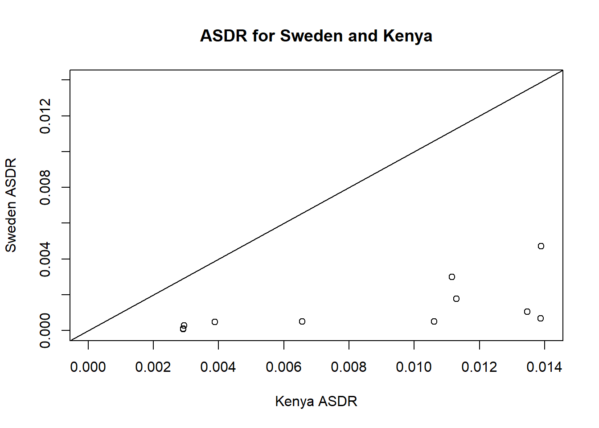

# Load packages ----
library(tidyverse)
library(here)
library(flextable)
# Read data ----
# Using the function here() in order to specify location of file from
# root directory
world_data <- readr::read_csv(here("data", "World.csv"))
kenya_data <- readr::read_csv(here("data", "Kenya.csv"))
sweden_data <- readr::read_csv(here("data", "Sweden.csv"))
options(scipen = 10)Understanding World Population Dynamics
Assignment 1 - PSYC593
Understanding population dynamics is important for many areas of social science. We will calculate some basic demographic quantities of births and deaths for the world’s population from two time periods: 1950 to 1955 and 2005 to 2010. We will analyze the following CSV data files - Kenya.csv, Sweden.csv, and World.csv. Each file contains population data for Kenya, Sweden, and the world, respectively. The table below presents the names and descriptions of the variables in each data set.
| Name | Description |
|---|---|
country |
Abbreviated country name |
period |
Period during which data are collected |
age |
Age group |
births |
Number of births in thousands (i.e., number of children born to women of the age group) |
deaths |
Number of deaths in thousands |
py.men |
Person-years for men in thousands |
py.women |
Person-years for women in thousands |
Source: United Nations, Department of Economic and Social Affairs, Population Division (2013). World Population Prospects: The 2012 Revision, DVD Edition.
The data are collected for a period of 5 years where person-year is a measure of the time contribution of each person during the period. For example, a person that lives through the entire 5 year period contributes 5 person-years whereas someone who only lives through the first half of the period contributes 2.5 person-years. Before you begin this exercise, it would be a good idea to directly inspect each data set. In R, this can be done with the View function, which takes as its argument the name of a data.frame to be examined. Alternatively, in RStudio, double-clicking a data.frame in the Environment tab will enable you to view the data in a spreadsheet-like view.
Question 1
We begin by computing crude birth rate (CBR) for a given period. The CBR is defined as: \[ \text{CBR} = \frac{\text{number of births}}{\text{number of person-years lived}} \]
Compute the CBR for each period, separately for Kenya, Sweden, and the world. Start by computing the total person-years, recorded as a new variable within each existing data.frame via the $ operator, by summing the person-years for men and women. Then, store the results as a vector of length 2 (CBRs for two periods) for each region with appropriate labels. You may wish to create your own function for the purpose of efficient programming. Briefly describe patterns you observe in the resulting CBRs.
Answer 1
We calculate the total person years for each dataset by taking the sum of the person years for men and the person years for women. This is stored in a new variable called py_total.
# Create new variable py_total = total person years for each data set
world_data$py_total<-world_data$py.men+world_data$py.women
kenya_data$py_total<-kenya_data$py.men+kenya_data$py.women
sweden_data$py_total<-sweden_data$py.men+sweden_data$py.womenWe create a function that calculated Crude Birth Rate (CBR), where the input for the function is a dataframe that has a births variable and a py_total variable. The CBR is calculated by taking . Separate CBRs are calculated for each time period (in this case we have two separate periods).
# Function to compute the Crude Birth Rate (CBR)
# Takes a dataframe and computes the crude birth rate for two different periods
# of time.
# Assumes each dataset has births and py_total variables.
compute_cbr <- function (pop_data) {
pop_data %>%
group_by(period) %>%
summarise(cbr = sum(births) / sum(py_total)) %>%
pull()
}We calculate the CBR using the new function we just created, and we obtain two values for each dataset.
# Compute the CBR for each data set
(world_cbr <- compute_cbr(world_data))
(kenya_cbr <- compute_cbr(kenya_data))
(sweden_cbr <- compute_cbr(sweden_data))Answer
The CBR for Kenya in the time period 1950-1955 is 0.0521. In the time period 2005-2010, the CBR for Kenya is 0.0385. The CBR for Sweden during 1950-1955 is 0.0154. For the period of 2005-2010, Sweden’s CBR is 0.0119. The world’s CBR for the period 1950-1955 is 0.0373. The world’s CBR for the period 2005-2010 is 0.0202.
Question 2
The CBR is easy to understand but contains both men and women of all ages in the denominator. We next calculate the total fertility rate (TFR). Unlike the CBR, the TFR adjusts for age compositions in the female population. To do this, we need to first calculate the age specific fertility rate (ASFR), which represents the fertility rate for women of the reproductive age range \([15, 50)\). The ASFR for age range \([x, x+\delta)\), where \(x\) is the starting age and \(\delta\) is the width of the age range (measured in years), is defined as: \[ \text{ASFR}_{[x,\ x+\delta)} \ = \ \frac{\text{number of births to women of age $[x,\ x+\delta)$}}{\text{Number of person-years lived by women of age $[x,\ x+\delta)$}} \] Note that square brackets, \([\) and \(]\), include the limit whereas parentheses, \((\) and \()\), exclude it. For example, \([20, 25)\) represents the age range that is greater than or equal to 20 years old and less than 25 years old. In typical demographic data, the age range \(\delta\) is set to 5 years. Compute the ASFR for Sweden and Kenya as well as the entire world for each of the two periods. Store the resulting ASFRs separately for each region. What does the pattern of these ASFRs say about reproduction among women in Sweden and Kenya?
Answer 2
The compute_asfr function removes age groups that are not applicable, and computes the asfr for the remaining age groups and periods by taking . This creates a new variable in the dataset named asfr.
# Function to compute Age specific fertility rate (ASFR)
# Removes age groups not applicable and creates new variable called asfr
# by dividing births (during that period and for that age range) by the
# women person-years
compute_asfr <- function (pop_data) {
pop_data %>%
filter(age != "0-4" & age != "5-9" & age != "10-14" & age != "50-54" &
age != "55-59" & age != "60-69" & age != "70-79" & age != "80+") %>%
mutate(asfr = births / py.women)
}We then create the asfr variable using the compute_asfr function. We save it to a new dataframe variable since we remove some age groups in the process.
# Compute ASFR for each data set
world_asfr_df <- compute_asfr(world_data)
kenya_asfr_df <- compute_asfr(kenya_data)
sweden_asfr_df <- compute_asfr(sweden_data)We now want to compare the ASFR’s for Kenya and Sweden. By creating a scatterplot to compare these values, we can better view how Sweden and Kenya might differ from each other.
# Compare ASFRs for Kenya and Sweden through a scatterplot
plot(kenya_asfr_df$asfr,
sweden_asfr_df$asfr,
xlab = "Kenya ASFR",
ylab = "Sweden ASFR",
xlim = c(0, 0.4),
ylim = c(0, 0.4))
# title for plot
title("ASFR for Sweden and Kenya")
Answer
The scatterplot above shows the ASFR values for Sweden and Kenya. Looking at the pattern of data, we can see that Kenya consistenly has higher ASFR compared to Sweden, indicating that the reproduction rates are much higher in Kenya than in Sweden.
Question 3
Using the ASFR, we can define the TFR as the average number of children women give birth to if they live through their entire reproductive age. \[ \text{TFR} = \text{ASFR}_{[15,\ 20)} \times 5 + \text{ASFR}_{[20,\ 25)} \times 5 + \dots + \text{ASFR}_{[45,\ 50)} \times 5 \]
We multiply each age-specific fertility rate rate by 5 because the age range is 5 years. Compute the TFR for Sweden and Kenya as well as the entire world for each of the two periods. As in the previous question, continue to assume that women’s reproductive age range is \([15, 50)\). Store the resulting two TFRs for each country or the world as a vector of length two. In general, how has the number of women changed in the world from 1950 to 2000? What about the total number of births in the world?
Answer 3
We create a function called compute_tfr that computes the TFR for each time period, by multiplying the ASFR for that time period by 5 (because each age range spans 5 years). This function gives a TFR value for each time period.
# Function to compute the total fertility rate (TFR)
# Takes a dataset and computes the TFR for each time period by taking 5 * the total
# asfr for that time period
compute_tfr <- function(pop_data) {
pop_data %>%
group_by(period) %>%
summarise(tfr = 5 * sum(asfr)) %>%
pull()
}We then compute the TFR for each data set using the new compute_tfr function.
# Compute the TFR for each data set
(world_tfr <- compute_tfr(world_asfr_df))
(kenya_tfr <- compute_tfr(kenya_asfr_df))
(sweden_tfr <- compute_tfr(sweden_asfr_df))We look at the total women in the world and the total births in the world for each time period by taking the sum of each, grouped by time period. We can then examine how these values have changed over time by taking the difference
# Compute totals of women and births in the world by period
(
totals_world <- world_data %>%
group_by(period) %>%
summarise(
total_women = sum(py.women),
total_births = sum(births)
)
)
# Compare how much these totals have changed
# [total women/births from 2005-2010] / [total women/births from 1950-1955]
(changes_totals <- totals_world[2, -1] / totals_world[1, -1])Answer
The total number of women in the world has increased from 6555685.506 in 1950-1955 to 16554781.02 in 2005-2010. In other words, there are 2.53 times the number of women in 2005-2010 compared to 1950-1955.
The total number of births in the world (in the thousands) increased from 488891.527 in 1950-1955 to 674581.267 in 2005-2010. There are 1.38 times the number of births in 2005-2010 compared to 1950-1955.
Question 4
Next, we will examine another important demographic process: death. Compute the crude death rate (CDR), which is a concept analogous to the CBR, for each period and separately for each region. Store the resulting CDRs for each country and the world as a vector of length two. The CDR is defined as: \[ \text{CDR} = \frac{\text{number of deaths}}{\text{number of person-years lived}} \] Briefly describe patterns you observe in the resulting CDRs.
We create a function that can calculate CDR per time period given a particular data set. It does this by taking the total number of deaths within a time period divided by the total number of person-years within a time period.
# Function to compute the Crude death rate (CDR)
# Groups by period to get CDR values for each time period.
# Calculates CDR by dividing all deaths in a period by
# all person-years in a period
compute_cdr <- function (pop_data) {
pop_data %>%
group_by(period) %>%
summarise(cbr = sum(deaths) / sum(py_total)) %>%
pull()
}We then use the new function compute_cdr to calculate CDR for each region.
# Compute the CDR for each data set
(world_cdr <- compute_cdr(world_data))
(kenya_cdr <- compute_cdr(kenya_data))
(sweden_cdr <- compute_cdr(sweden_data))It’s nice to view data in a table, so here we arrange the CDR data from each region into a table.
# combining all regions into a single data set
cdr_data <- as.data.frame(rbind(world_cdr, kenya_cdr, sweden_cdr))
# Adding a column of region names
# Rounding all numbers to 5 decimal places
cdr_data2 <- cdr_data %>%
add_column(Region = c("World", "Kenya", "Sweden"),
.before = "V1") %>%
mutate_if(is.numeric, round, digits = 5)
# creating a flextable object with the data
cdr_table <-
regulartable(cdr_data2) %>%
theme_zebra() %>%
autofit()
# Giving the columns informative titles
cdr_table <- set_header_labels(cdr_table,
values = list(V1 = "1950-1955",
V2 = "2005-2010"))
# Printing the table (necessary for flextables in RMarkdown)
#cat(knitr::knit_print(cdr_table))
cdr_tableRegion | 1950-1955 | 2005-2010 |
|---|---|---|
World | 0.01932 | 0.00817 |
Kenya | 0.02396 | 0.01039 |
Sweden | 0.00984 | 0.00997 |
Viewing the table above, we can see that Kenya has a higher CDR than Sweden and the “world average.” This is true regardless of time period. We can also see that CDR values have all decreased in the more recent time period compared to the older time period. Sweden has better CDRs than Kenya and the world average, regardless of time period.
Question 5
One puzzling finding from the previous question is that the CDR for Kenya during the period of 2005-2010 is about the same level as that for Sweden. We would expect people in developed countries like Sweden to have a lower death rate than those in developing countries like Kenya. While it is simple and easy to understand, the CDR does not take into account the age composition of a population. We therefore compute the age specific death rate (ASDR). The ASDR for age range \([x, x+\delta)\) is defined as: \[ \text{ASDR}_{[x,\ x+\delta)} \ = \ \frac{\text{number of deaths for people of age $[x,\ x+\delta)$}} {\text{number of person-years of people of age $[x,\ x+\delta)$}} \] Calculate the ASDR for each age group, separately for Kenya and Sweden, during the period of 2005-2010. Briefly describe the pattern you observe.
We create a function called compute_asdr that first filters the data set so that only the time period 2005-2010 remains. Then it creates a new variable called asdr that is calculated by taking the deaths divided by the total number of person-years for each age range.
# Function to compute Age specific death rate (ASDR)
# First removes any time periods that are not 2005-2010
# Then takes a data set and computes asdr by dividing
# number of deaths by person-year total
compute_asdr <- function (pop_data) {
pop_data %>%
filter(period == "2005-2010") %>%
mutate(asdr = deaths / py_total)
}We then use the new compute_asdr function to calculate ASDR for each region.
# Compute ASDR for each data set
world_asdr <- compute_asdr(world_data)
kenya_asdr <- compute_asdr(kenya_data)
sweden_asdr <- compute_asdr(sweden_data)It’s easier to compare the ASDR values between Sweden and Kenya when we use a scatterplot. This code creates a scatterplot comparing Sweden’s ASDR and Kenya’s ASDR.
# Compare ASDRs for Kenya and Sweden through a scatterplot
plot(kenya_asdr$asdr,
sweden_asdr$asdr,
xlab = "Kenya ASDR",
ylab = "Sweden ASDR",
xlim = c(0, 0.014),
ylim = c(0, 0.014))
# title for plot
title("ASDR for Sweden and Kenya")
The scatterplot above shows that Kenya has much larger ASDR values than Sweden.
Question 6
One way to understand the difference in the CDR between Kenya and Sweden is to compute the counterfactual CDR for Kenya using Sweden’s population distribution (or vice versa). This can be done by applying the following alternative formula for the CDR. \[ \text{CDR} \ = \ \text{ASDR}_{[0, 5)} \times P_{[0,5)} + \text{ASDR}_{[5, 10)} \times P_{[5, 10)} + \cdots \] where \(P_{[x, x+\delta)}\) is the proportion of the population in the age range \([x, x+\delta)\). We compute this as the ratio of person-years in that age range relative to the total person-years across all age ranges. To conduct this counterfactual analysis, we use \(\text{ASDR}_{[x,x+\delta)}\) from Kenya and \(P_{[x,x+\delta)}\) from Sweden during the period of 2005–2010. That is, first calculate the age-specific population proportions for Sweden and then use them to compute the counterfactual CDR for Kenya. How does this counterfactual CDR compare with the original CDR of Kenya? Briefly interpret the result.
We create a function called compute_pop_prop that will compute the population proportion for the time period 2005-2010 by taking the person-years total for each age range divided by the sum of all person-years for that period.
# Function to compute population proportion by period
# First filter out time periods other than 2005-2010.
# Calculates population proportion by dividing
# person-years total for that age group by the sum of
# person-years for that period.
compute_pop_prop <- function (pop_data) {
pop_data %>%
filter(period == "2005-2010") %>%
mutate(pop_prop = py_total / sum(py_total)) %>%
ungroup()
}We use the new compute_pop_prop function to calculate the population proportion per time period for each region.
# Compute population proportion for each data set
world_pop <- compute_pop_prop(world_data)
kenya_pop <- compute_pop_prop(kenya_data)
sweden_pop <- compute_pop_prop(sweden_data)Lastly, we calculate the counterfactual CDR for Kenya by multiplying Kenya’s ASDR by Sweden’s population proportion, for each age group. Then we take the sum of those values within each time period to obtain a period-specific counterfactual CDR for Kenya with respect to Sweden.
# Compute Kenyas CDR Kenya had Sweden's population distribution
kenya_counter_cdr <-
mutate(kenya_asdr,
temp_cdr = asdr * sweden_pop$pop_prop) %>%
summarise(cdr_re_sweden = sum(temp_cdr))The counterfactual CDR value for Kenya in 2005-2010 is 0.0232, which is higher than the original Kenya CDR value of 0.0104. This suggests that if Kenya had the age distribution of Sweden in 2005-2010, the CDR would be even higher.